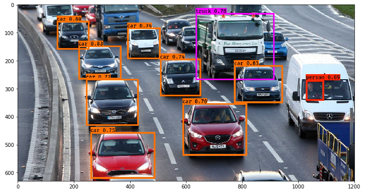
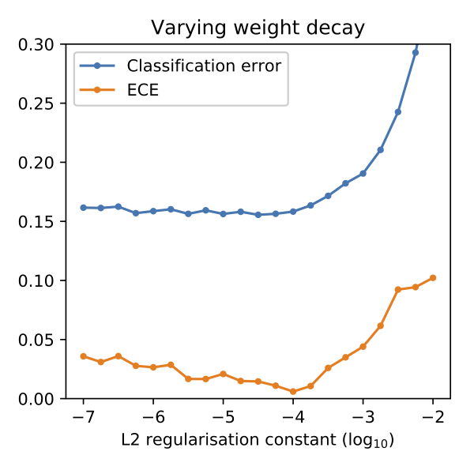
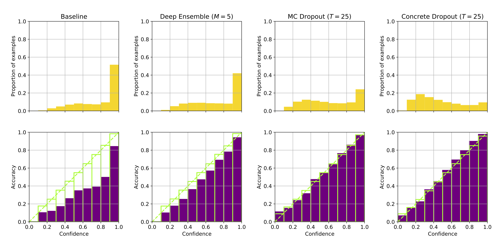

On the overconfidence of modern neural networks
On the overconfidence of modern neural networks. This is the title of the coursework I did with a fellow student at the University of Edinburgh. (PDF: Part 1, Part 2.)
Our topic was influenced by a previous study, titled On Calibration of Modern Neural Networks (Guo, Pleiss, Sun, & Weinberger, 2017).
Applications of uncertainty estimation include threshold-based outlier detection, active learning, uncertainty-driven exploration of reinforcement learning, or certain safety-critical applications.
What is uncertainty?
No computer vision system is perfect, so an image classification algorithm sometimes identifies people as not-people, or not-people as people. While we usually care about the class with the highest output (the “most likely” class), we can treat the softmax outputs of a classifier as uncertainty estimates. (After all, that is how we trained a model when treating the softmax outputs of a classifier as a probability distribution, and minimizing the negative log likelihood of the model given the data.) For example, out of 1000 classifications made with an output of 0.8, approximately 800 should be correct if the system is well-calibrated.

(Example output of a YOLO object detection network, with the probability estimates. Image source: Analytics Vidhya.)
Ideally, we want our system to be 100% correct, but we rarely have access to an all-knowing Oracle. In cases where it is hard to distinguish between two categories (like on the cat-dog below) we want the uncertainties to be well-calibrated, so that predictions are neither overly confident nor insufficiently confident.
(Image source: Google Brain)
Our results
Interim report
Our initial experiments showed that our baseline model is already well-calibrated when trained on the EMNIST By-Class dataset. Calibration worsened when we used only a subset of the training set. We found that increasing regularization increases calibration, but too much regularization leads to a decrease in both accuracy and calibration. (See figure below.) This contradicts the findings of (Guo, Pleiss, Sun, & Weinberger, 2017, sec. 3), who found that model calibration can improve by increasing the weight decay constant, well after the model achieves minimum classification accuracy. One of our main findings is that cross-entropy error is not a good indicator of model calibration.

(ECE: expected calibration error. The lower the better.)
Final report
We replicate the findings of (Guo, Pleiss, Sun, & Weinberger, 2017) that deep neural networks achieve higher accuracy but worse calibration than shallow nets, and compare different approaches for improving the calibration of neural networks (see figure below). As the baseline approach, we consider the calibration of the softmax outputs from a single network; this is compared to deep ensembles, MC dropout, and concrete dropout. Through experiments on the CIFAR-100 data set, we find that a large neural network can be significantly over-confident about its predictions. We show on a classification problem that an ensemble of deep networks has better classification accuracy and calibration compared to a single network, and that MC dropout and concrete dropout significantly improve the calibration of a large network.

(Top row: confidence plots for a deep neural net. The more skewed to the right, the better. Bottom row: corresponding calibration plots. The more close to the diagonal, the better.)
Things I would do differently
With a little more experience behind my back now, I would make the following changes in experiment design and writing the report:
- Use a validation set. We only used a training set because we trained for minimum error, and we expected calibration to be independent from accuracy, but that is a strong assumption (and likely incorrect, seeing our results in the interim report).
- Use better biblography sources. Instead of Google Scholar, I would search DBLP, where the information is more correct and consistent.
- Use pastel colors. I let my collaborator have it his way, but ever since this submission I’m having nightmares in purple and glowing green :D
In future work, I would like to test the calibration of a Bayesian neural network, where the weights of the network have a probability distribution instead of a point estimate.
References
- Guo, C., Pleiss, G., Sun, Y., & Weinberger, K. Q. (2017). On Calibration of Modern Neural Networks. In D. Precup & Y. W. Teh (Eds.), Proceedings of the 34th International Conference on Machine Learning (Vol. 70, pp. 1321–1330). International Convention Centre, Sydney, Australia: PMLR. Retrieved from http://proceedings.mlr.press/v70/guo17a.html